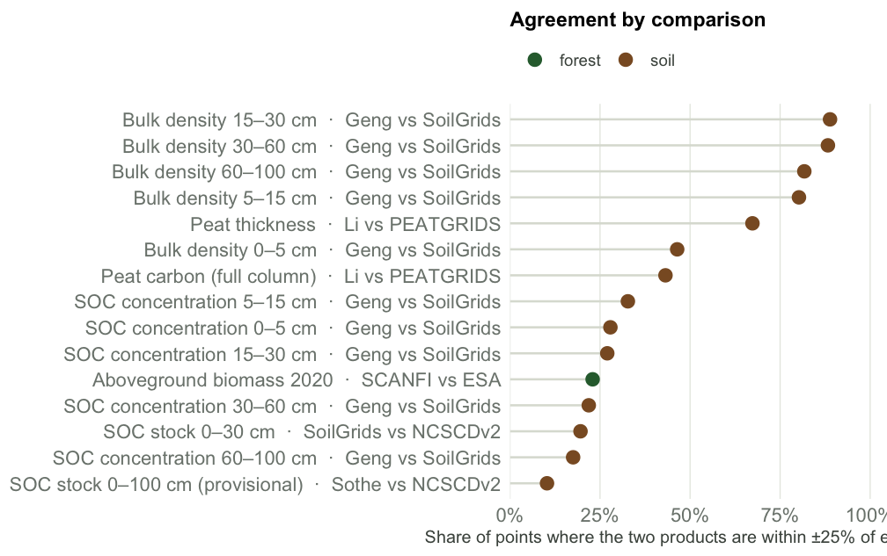

| Domain | Quantity | A vs B | Unit | Points | Mean A − B | r | Within ±25% |
|---|---|---|---|---|---|---|---|
| Soil | SOC concentration 0–5 cm | Geng vs SoilGrids | g/kg | 17,121 | -17.3 | 0.62 | 28% |
| Soil | Bulk density 0–5 cm | Geng vs SoilGrids | g/cm³ | 17,119 | 0.268 | 0.01 | 46% |
| Soil | SOC concentration 5–15 cm | Geng vs SoilGrids | g/kg | 17,121 | -10.5 | 0.62 | 33% |
| Soil | Bulk density 5–15 cm | Geng vs SoilGrids | g/cm³ | 17,119 | 0.1 | -0.05 | 80% |
| Soil | SOC concentration 15–30 cm | Geng vs SoilGrids | g/kg | 17,121 | -1.48 | 0.66 | 27% |
| Soil | Bulk density 15–30 cm | Geng vs SoilGrids | g/cm³ | 17,119 | 0.0479 | -0.06 | 89% |
| Soil | SOC concentration 30–60 cm | Geng vs SoilGrids | g/kg | 17,121 | -5.65 | 0.69 | 22% |
| Soil | Bulk density 30–60 cm | Geng vs SoilGrids | g/cm³ | 17,119 | -0.0467 | -0.02 | 88% |
| Soil | SOC concentration 60–100 cm | Geng vs SoilGrids | g/kg | 17,121 | -6.24 | 0.68 | 18% |
| Soil | Bulk density 60–100 cm | Geng vs SoilGrids | g/cm³ | 17,119 | -0.056 | 0.13 | 82% |
| Soil | SOC stock 0–30 cm | SoilGrids vs NCSCDv2 | kg C/m² | 15,836 | -1.17 | -0.04 | 20% |
| Soil | SOC stock 0–100 cm (provisional) | Sothe vs NCSCDv2 | kg C/m² | 15,804 | 29.1 | 0.28 | 10% |
| Soil | Peat thickness | Li vs PEATGRIDS | cm | 1,230 | -26.1 | 0.63 | 67% |
| Soil | Peat carbon (full column) | Li vs PEATGRIDS | kg C/m² | 1,230 | -37.6 | -0.02 | 43% |
| Forest | Aboveground biomass 2020 | SCANFI vs ESA | Mg/ha | 12,134 | -24 | 0.71 | 23% |
Where Canada’s carbon maps agree, and where they don’t
A like-for-like comparison of forest and soil carbon products, and of soil maps against field profiles.
Canada has several national and regional carbon maps built from different field data, covariates and grids. This report compares them only where they claim to measure the same thing at the same depth, and shows where they agree and disagree. No map is treated as truth.
The comparisons at a glance

Read the sections
- Forest: forest plot data (placeholder until plots are ingested), the training data and covariates behind each forest map, and SCANFI vs ESA CCI aboveground biomass.
- Soils: the five profile datasets compared with each other, the training data and covariates behind each soil map, map-to-map comparisons at matching depths, and maps against profiles.
- Methods: the rules, grids, unit conversions, sampling design and limitations.
- State of Data summary: the inventory this comparison builds on.
What this comparison does not claim
- Agreement between two maps is not accuracy; both can share the same training data or the same blind spots.
- Differences are reported on each pair’s coarser native grid; they say nothing about finer detail.
- Profile comparisons set a soil core beside a pixel average. Several profile datasets trained some of the maps, so agreement there is not independent validation.
- The Sothe 0–100 cm comparison is provisional: its depth is a working assumption and its stored units are unverified.